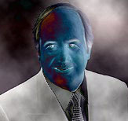
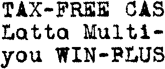
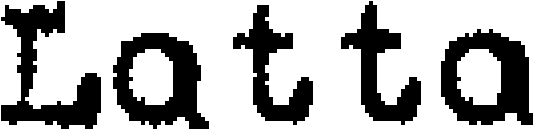

Tweet
Tweet
Summing up, image files are basically long strings of 1s and os that represent the colors of each dot. Bitmapped images can be stored, printed and displayed by computers.
Image editors — when executing photo retouching, when morphing a face etc. — change bitmaps in all sorts of ways. It starts with changing a single pixel and ends with changes in the basic nature of an image — the brightness and contrast are modified, another color palette is applied, the image is distorted by an image filter etc. Enter the wonderful world of Adobe Photoshop and similar paint software!

Still, when it comes to text editing, image files are of no use. Modifying the text of a bitmap is an impossible task: the only way to change the text contained in an image file would be to edit it... pixel by pixel! In the illustration below, we changed the two “o’s” of the word “Lotto” manually into “a’s”. To apply that simple change, we had to make some twenty individual white pixels black — and it doesn’t even look convincing!
 
Modifying just one character in a bitmap is already a tough job. Checking the spelling of a text, modifying the order of the words by cutting and pasting some text, making words bold or italic, adding sentences, erasing paragraphs, searching and replacing words and so many other things that are a cinch with word processors are downright impossible with raster images.
Scans are certainly a valid way of storing text — after all, that’s what electronic document management (“EDM”) is all about. But don’t believe for a second that such documents are editable: pixels are not characters, and never the twain shall meet!
The text is in the eye of the beholder — The intelligence of OCR — Bitmaps only take you so far — 90,000 kids on the block — OCR is the ultimate data cruncher! — OCR deserves recognition
Home page — Intro — Scanners — Images — History — OCR — Languages — Accuracy — Output — BCR — Pen scanners — Sitemap — Search — Contact – Feedback